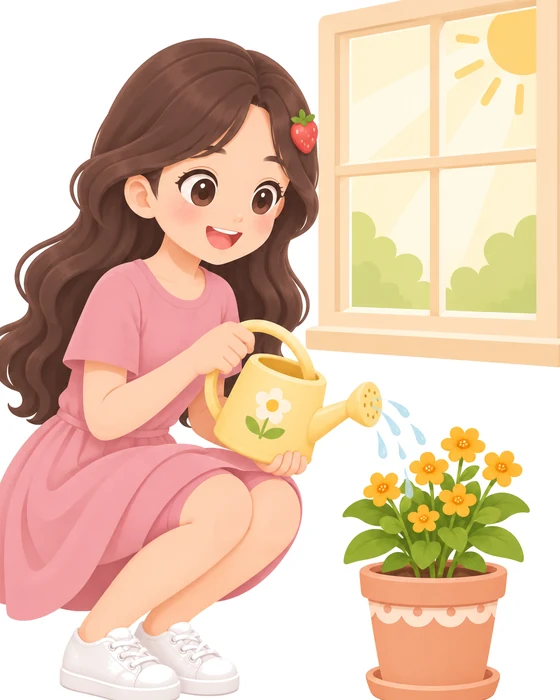
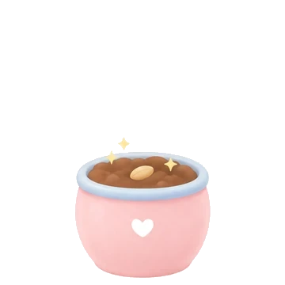

膝蓋醒來
坐姿伸膝
每邊 8 次0:40


今天第 1 次
長出一片新葉子
動了 3 分鐘。計時器重新開始，下次見。
坐久了就起來動一下，每動一次，盆栽就長一片葉子。
Sitting timer・久坐計時器
時間到會響鈴並跳出提醒，帶你做 3 分鐘、不會喘的膝蓋友善運動。每 20 分鐘也會提醒眼睛看遠方 20 秒。
Today's pot

完成第一次起身運動，種子就會發芽。
粉框是下一組輪替。每組都不跳、不深蹲，膝蓋會痛的人也能做。
How to use・怎麼使用
第一次要先按一下任何按鈕，瀏覽器才會允許播放聲音。語音使用電腦內建的中文語音，不同電腦聽起來會不太一樣。
全部是低衝擊動作。每張圖會在「開始」和「結束」兩個姿勢之間切換。
從「每天記得起身」開始，慢慢加到每週快走。減重主要靠吃，運動負責讓膝蓋有力、讓你有精神。
A day・一天的節奏
A week・一週安排
針對你提到的三件事：站起來膝蓋痛、眼睛模糊、體重增加爬樓梯會喘。
這裡的內容是一般保健建議，不能取代醫師診斷。運動時如果不只是「有點痠」而是會痛，就停下來；有下面任何警訊，請先就醫再開始運動。
膝蓋醒來

今天第 1 次
動了 3 分鐘。計時器重新開始，下次見。
看向 6 公尺外的窗外或遠處，慢慢眨眼 10 下。